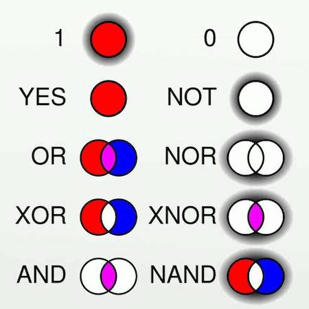
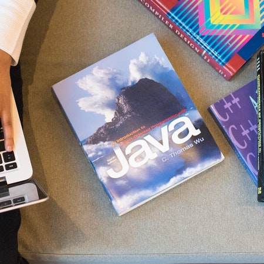
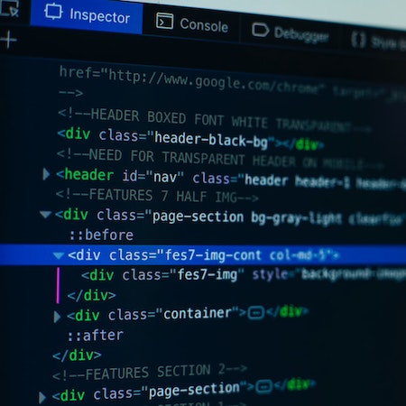

My modules
Com1001 Introduction to Software Engineering

This module teaches us Software Engineering concepts, what goes into developing it and how to work in a team. Part of the assessment is a group project where we will develop a software. That will involve creating a platform to connect Mentors and Mentees. We also learn Ruby whilst solving small problems on a fun and an interactive platform called Codio.
Com1002 Foundations of Computer Science
This module helps us to develop mathematical concepts and techniques that are crucial to the understanding of programming and computing. This involves learning about Propositional and Predicate logic, sets and Boolean algebra that is later assessed through quizzes.
Com1003 Java Programming
In this module we learn the Java Programming Language by watching lectures and completing short exercises after each lecture. Starting at 0 knowledge we learn the basics of Java, as well as good practices of commenting and the ability to solve problems concisely. We complete quizzes and assignments which involve writing programs.
Com1005 Machine and Intelligence
An introductory course to Artificial Intelligence, where in the first half of the Autumn Semester we learn about the history of AI, Turing test, Intelligent and Logical Agents. The second half we learn about Vision and Robotics. As well as lectures and quizzes, we also use MiROCloud - a simulation where we can program a robot.
Com1008 Web and Internet Technology
This is an autumn semester module that teaches us the basics of networks, interworking and information security. It also takes us through the process of creating a website and how to use html, css and java to do so. 80% of the module mark comes from creating this website.
Let's see how well you know the University of Sheffield!
Would you like to take a quiz?